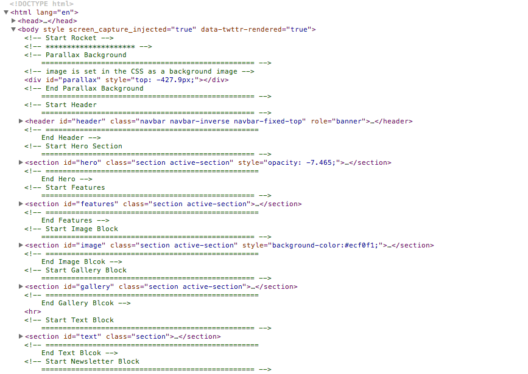
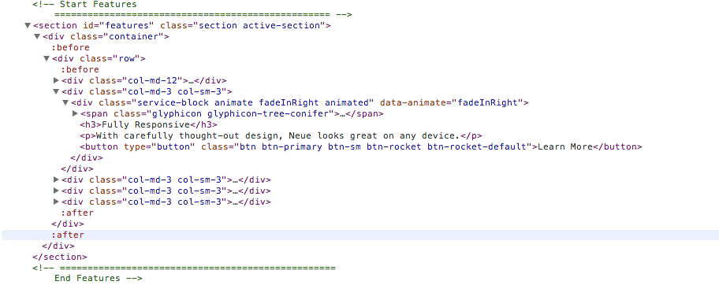

Created: 14/12/2013
By: Ulziibat Nansaltsog
Email: olziinaa@gmail.com
Thank you for purchasing my theme. If you have any questions that are beyond the scope of this help file, please feel free to email via my user page contact form here. Thanks so much!
Within the download you'll find the following directories and files, logically grouping common resources and providing both compiled and minified variations.
Once downloaded, unzip the compressed folder to see the structure of (the compiled) Promo. You'll see something like this
index.html
demo/
assets/
│ ├── demo-images
├── css/
│ ├── animate.css
│ ├── bootstrap.min.css
│ ├── prettyPhoto.css
│ └── style.css
├── js/
│ ├── bootstrap.js
│ └── ie8-responsive-file-warning.js
│ └── jquery-1.10.2.min.js
│ └── jquery.localscroll.min.js
│ └── jquery.prettyPhoto.js
│ └── jquery.scrollto.min.js
│ └── waypoints.min.js
│ └── scripts.js
└── fonts/
├── glyphicons-halflings-regular.eot
├── glyphicons-halflings-regular.svg
├── glyphicons-halflings-regular.ttf
└── glyphicons-halflings-regular.woff
This landing pages is a Based on Bootstrap 3.0. You will help bootstrap documentation on customize html & grids & layouts.
You can create full width div with background color & color. After use bootstrap structure. It will very simple & easy to use.
If you would like to edit the color, font, or style of any elements in one of these columns, you would do the following:
#you-section {
background-color: #someColor
color: #someColor;
}
If you don't like section padding.
I.E.
.section {
padding-top: 0px;
padding-bottom: 0px;
}
So, to ensure that your new styles are applied, make sure that they carry enough "weight" and that there isn't a style lower in the CSS file that is being applied after yours.
I'm using 4 CSS files in this theme. The first one is bootstrap.min.css file. Many browser interpret the default behavior of html elements differently. By using a Bootstrap CSS file, we can work round this. This file also contains some general styling, such as anchor tag colors, font-sizes, etc. Keep in mind, that these values might be overridden somewhere else in the file.
The style.css contains all of the specific stylings for the page. The file is separated into sections using:
/* Section
==================================================*/
.section {
padding: 100px 0; // Section Padding
}
/* Parallax Background
==================================================*/
#parallax {
height: 680px;
width: 100%;
position: fixed;
background: url('../../demo/man1.jpg') center center no-repeat; // Please replace your image
background-size: cover;
z-index: -100;
}
/* Hero
==================================================*/
#hero {
background: rgba(0, 0, 0, 0);
margin-top: 80px;
padding: 150px 0;
color: #000;
}
#hero h1 {
font-size: 60px; // Top slider big font size
}
#hero p.lead {
font-size: 1.8em; // Top Slider Text font size
}
/* Features
==================================================*/
#features {
background-color: #FFF;
}
.overview, .service-block {
text-align: center;
}
.overview .lead {
margin-bottom: 40px;
}
.service-block .glyphicon {
font-size: 60px;
margin-bottom: 20px;
}
prettyPhoto.css - for Gallery Lightbox
animate.css is a bunch of cool, fun, and cross-browser animations for you to use in your projects. Great for emphasis, home pages, sliders, and general just-add-water-awesomeness.
< yourtag class="animate" data-animate="fadeInDown" >.....< /yourtag >
You can change the duration of your animations, add a delay or change the number of times that it plays!
#yourElement {
-vendor-animation-duration: 3s;
-vendor-animation-delay: 2s;
-vendor-animation-iteration-count: infinite;
}
Animation Names
Attention seekers:
flash bounce shake tada swing wobble pulse
Flippers (currently Webkit, Firefox, & IE10 only):
flip flipInX flipOutX flipInY flipOutY
Fading entrances:
fadeIn fadeInUp fadeInDown fadeInLeft fadeInRight fadeInUpBig fadeInDownBig fadeInLeftBig fadeInRightBig
Fading exits:
fadeOut fadeOutUp fadeOutDown fadeOutLeft fadeOutRight fadeOutUpBig fadeOutDownBig fadeOutLeftBig fadeOutRightBig
Bouncing entrances:
bounceIn bounceInDown bounceInUp bounceInLeft bounceInRight
Bouncing exits:
bounceOut bounceOutDown bounceOutUp bounceOutLeft bounceOutRight
Rotating entrances:
rotateIn rotateInDownLeft rotateInDownRight rotateInUpLeft rotateInUpRight
Rotating exits:
rotateOut rotateOutDownLeft rotateOutDownRight rotateOutUpLeft rotateOutUpRight
This theme imports three Javascript files.
function parallax() {
var scrollPosition = $(window).scrollTop();
$('#parallax').css('top',(80 - (scrollPosition * 0.3))+'px' ); // bg image moves at 30% of scrolling speed
$('#hero').css('opacity',((100 - scrollPosition/2) *0.01));
}
$(document).ready(function() {
/* Parallax Background
================================================== */
$(window).on('scroll', function(e) {
parallax();
});
/* Local Scroll
================================================== */
jQuery('.navbar').localScroll({
offset: -80,
duration: 500
});
/* Active Menu
================================================== */
jQuery(function() {
var sections = jQuery('section');
var navigation_links = jQuery('nav a');
sections.waypoint({
handler: function(direction) {
var active_section;
active_section = jQuery(this);
if (direction === "up") active_section = active_section.prev();
var active_link = jQuery('nav a[href="#' + active_section.attr("id") + '"]');
navigation_links.parent().removeClass("active");
active_link.parent().addClass("active");
active_section.addClass("active-section");
},
offset: '35%'
});
});
/* Animation with Waypoints
================================================== */
jQuery('.animate').waypoint(function() {
var animation = jQuery(this).attr("data-animate");
jQuery(this).addClass(animation);
jQuery(this).addClass('animated');
}, { offset: '80%' });
/* Pretty Photo
================================================== */
jQuery('#gallery a').attr('rel', 'prettyPhoto');
jQuery("a[rel^='prettyPhoto']").prettyPhoto();
/* Bootstrap Carousel
================================================== */
jQuery('.carousel').carousel()
});
I've used the following images, icons or other files as listed.
Once again, thank you so much for purchasing this theme. As I said at the beginning, I'd be glad to help you if you have any questions relating to this theme. No guarantees, but I'll do my best to assist. If you have a more general question relating to the themes on ThemeForest, you might consider visiting the forums and asking your question in the "Item Discussion" section.
Ulziibat Nansaltsog